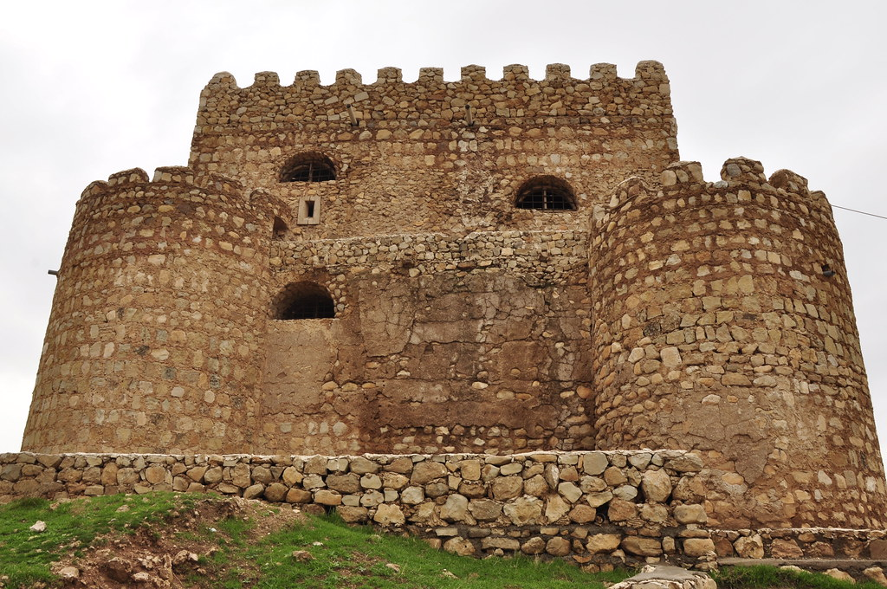
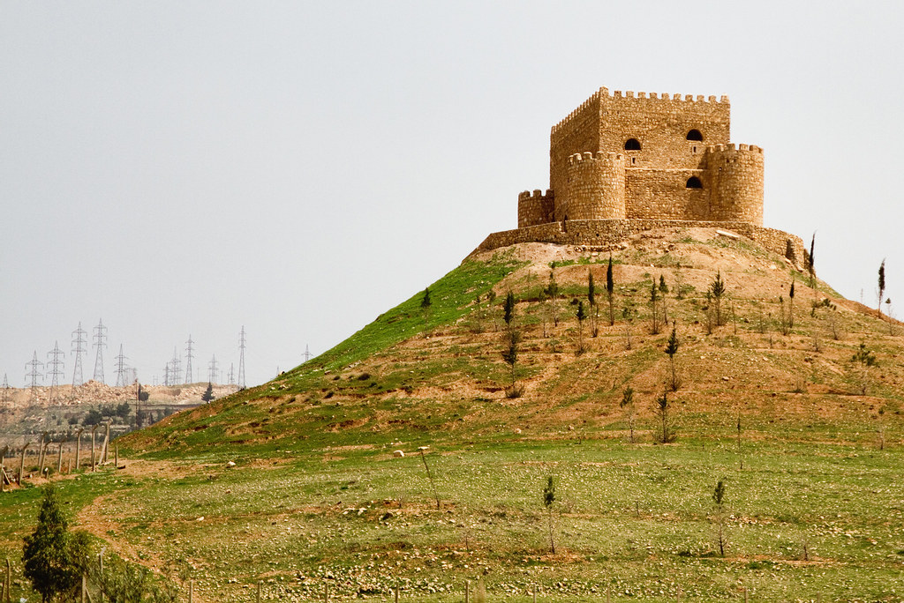

Khanzad Castle

Khanzad, princess of King Sleman, ruler of the Soran Emirate in the 15th century, built Khanzad Castle. It remains intact to the present day. Khanzad was also the sister of King Mohammed, the legendary Kurdish leader of Soran Emirate.
She ruled over two Kurdish areas, Harir and Soran, for seven years. At that time, Rawanduz was the capital of the Soran Emirate.
Khanzad is known for her audacity, bravery, and intelligence. She ruled Soran Emirate after her brother, King Mohammed, died after being poisoned. When she came to power, she avenged her brother's death by killing all those who poisoned him.

She built a castle to serve as her place of residence and for the defense of Erbil. She named it Khanzad Castle after herself. The fortress is located east of Erbil, on the Erbil-Shaqlawa Road. It still sits atop a hill a mere 22 kilometers (14 miles) away from the Kurdistan Region capital.
Historians and archaeologists consider Khazand Castle a valuable asset.
"It is one of the most important archaeological and historical sites," said Amanj Adil, a local historian. "It is built from stones and gypsum, and it has kept its original shape."
Kurds believe the castle is significant for numerous reasons.
"This castle is proof that Kurdish people once had their own country," said Reza Shamal, a local from Erbil. "As a woman, I am proud of this castle because it was built by a female Kurdish ruler, Khanzad, who was brave and legendary. This tells us a lot. It tells me that we had strong female rulers a long time ago."
Khanzad's name, also known as the "Kurdish Warrior Queen", is commemorated and referenced in various Kurdish songs and poems.
"I am proud of my name as it has a nice history behind it," said Khanzad Bakir, a local from Erbil. "My father named me after Mir Khanzad for her bravery. I've visited the castle so many times because it gives me strength and pride."
Khanzad built roads, schools, and mosques. She was also the commander of a large army of 50,000 soldiers, including 12,000 infantry and 10,000 cavalry archers that protected the Soran Emirate.
"Mir Khanzad built many other castles across Kurdistan but they have been destroyed," said Adil. "But Khanzad Castle is still in good shape."
Khanzad Castle is 40 meters high and consists of two floors. It attracts thousands of tourists each year.